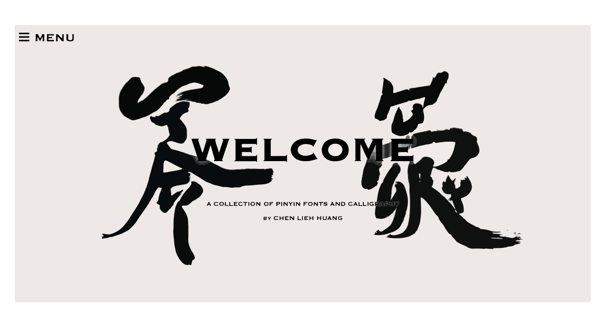

melpao.github.io is a personal portfolio website that I developed using self-taught skills in HTML, CSS, and JavaScript. Specific artistic elements of the website are designed through the use of the Adobe suite software. For example, the banner text of each page is handwritten, then rendered and vectorized on Adobe Illustrator. Also, the image under the "About Me" section was edited with Lightroom and finished with Illustrator.
~ In Progress ~
Route Me is a python-based traffic optimization program that uses global variables to execute calls and pulls in JSON/XML data from different API sources. A few of the APIs implemented consists of data from the Mapquest, WSDOT, Google Maps and Bing Maps API. The program processes and analyzes all the data into a comprehensive output, presented on a dynamic and interactive webpage that allows users to select different input fields and maps.
View the opensource code here.
~ In Progress ~
pinyinshufa.com is an online webpage developed and designed for TyFont Studio, a new branch of a multidimensional and "functional" calligraphy, deviated from traditional Chinese calligraphy. Skills in operating VPS hosting and servers, along with abilities in SSH command interface were acquired and self-taught.
